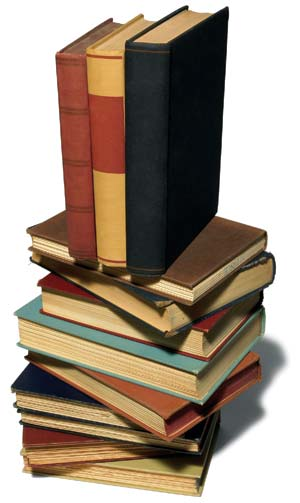
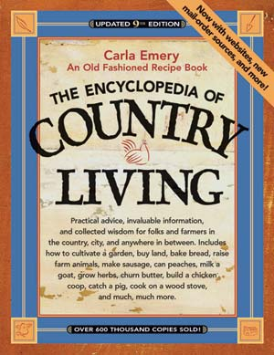
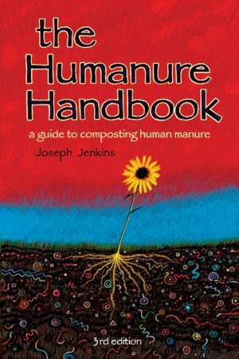
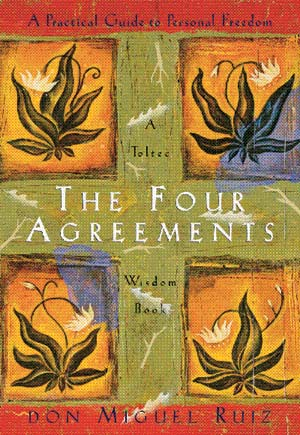

Last winter, we asked you to tell us about your favorite books, the works that have changed your life. You responded enthusiastically, offering up a veritable library of tomes and topics. Here are the winners, the most useful and inspiring selections to consider for your wiser living bookshelf. Happy reading! - Mother
While living in suburban Virginia, my husband and I read all we could about farms, gardens and livestock. The Nearings, “Brother” Salatin and other writers spoke to us. We amazed our friends and neighbors with successes in gardening, canning, goats and chickens on our “backyard” farm.
“Were you raised on a farm?” we were often asked. “No, but we do a lot of reading.”
We ultimately took the plunge and left Virginia for 80 acres of farmland in Missouri. Since April 2006, our goat herd has increased, and we have added a guard llama and Dexter calves. Our farmstead library has also grown accordingly.
The one book that I hold above all others is Carla Emery’s The Encyclopedia of Country Living. I have yet to find a piece of information in it that has steered me wrong. My only regret is that I never wrote to Carla to thank her for such dedicated work, but I feel that every time I open the book a part of her lives on.
Mary Jane Phifer
Mansfield, Missouri
One of the books that has changed my life is 50 Simple Things You Can Do to Save the Earth by the Earth Works Group. Referring to it since high school, and now with three kids and a 10-acre farm, I can help show my husband and our children how to take better care of our Earth. It helps us compost for our gardens, reuse and recycle everything we possibly can, plus save money, water and energy. We love our farm and our Earth and hope to help slow, stop and reverse global warming.
Karen Ladd
Farmington, Missouri
When I picked up A Book of Bees by Sue Hubbell, I was simply looking for information about the insects and whether honey was something to consider on my future homestead. I found so much more.
The book takes up Hubbell’s story 15 years and 300 hives after her bold move from East Coast university librarian to Missouri Ozarks beekeeper. With skill and a keen sense of humor, Hubbell explains all one needs to know about maintaining a beekeeping and honey farm.
Being a middle-aged woman with similar aspirations, I found this book inspiring. It’s about bees, but also about having a can-do spirit, working hard and following one’s dreams.
Susan Fay Smith
Wilmington, Delaware
When I read Dave Ramsey’s Financial Peace, my wife and I were living paycheck to paycheck. After reading this book, I began to question many of my views on money and life. Ramsey spelled out how to achieve financial peace step-by-step, including the common sense approach of “if you don’t have it, don’t spend it.”
This book has changed my life because I am no longer “keeping up with the Joneses.” Instead, I’m taking steps now so that one day my dreams will become reality.
Chris Howard
Evansville, Indiana
I can honestly say that through reading the The Four Agreements by Don Miguel Ruiz, I have become a better person in my thoughts and actions.
My favorite is the agreement, “Always do your best.” Ruiz says that this is the agreement “that allows the other three to become deeply ingrained habits.” One of the most helpful points is when he explains, “Under any circumstance, always do your best, no more, no less. But keep in mind that your best is never going to be the same from one moment to the next … When you wake up refreshed and energized in the morning, your best will be better than when you are tired at night.”
I find this to be very true. The world would be such a beautiful and happy place all the time if everyone worked on the four agreements.
Heather Benek
Polk, Pennsylvania
For the past 23 years, I have depended on two indispensable books: Herbally Yours by Penny C. Royal, and Home Remedies From Amish Country by Abana Books.
My family has used both to enhance and maintain our health, keep healthcare costs to the bare minimum, and to empower us to take charge of our own healthcare. I love the independence and empowerment these books have given us.
Lori Smith
Newark, Ohio
If you seek to be a pioneer, track down The Long Winter by Laura Ingalls Wilder. It will lend support as you tend a homestead or, in my case, a bare-bones wilderness cabin.
The story is perfect for children, but adults will appreciate the spirited dialogue, the plainly stated narrative and the larger message that grows more complex with each reading.
Becoming a pioneer is a timeless endeavor made easier with this book under your belt. It will leave you more resourceful and strong. You’ll be stalwart when confronting your own long winter and you’ll be free.
Judith Jones
Victor, New York
I have thought long and hard about which book has changed my life, and my final decision is The Up-With-Wholesome, Down-With-Store-Bought Book of Recipes and Household Formulas by Yvonne Young Tarr.
Purchased in 1976, when I still lived in the city, it has taught me how to raise chickens, churn butter, make wine, make hand cream, remove ball point pen ink from a shirt, grow herbs, cook a to-die-for crepe and make freezer cookie dough. Inside the rolled up, stuck together pages of this book is all I need to know about living on the land.
Barbara Gillihan
Fredonia, Kentucky
For many reasons, I love The Humanure Handbook by Joseph Jenkins. Viewing our human waste as a viable end product is a bold and insightful idea, and the author’s in-depth scientific study on the subject provides a foundation the rest of us can use.
I applaud Jenkins for bringing this wealth of information to the world in a lighthearted, well-written and superbly documented way.
Jo Crivellaro
Mountain Grove, Ontario
My life has not been the same since reading Diet for a New America by John Robbins. This book opened my eyes to the horrors of the meat industry going unnoticed by the public; otherwise, how can we explain having allowed the animal cruelty described in this book?
Since reading this book, not only have I become a vegetarian, but I have started looking at other aspects of my life which affect the quality of life on Earth.
Kathy Pusey
Redlands, California
When my wife and I had been married for only a few months, we were working three jobs between us to pay for thousands in credit card debt. For us, happiness came through stuff, and stuff came through money.
Then I read Richard Foster’s Freedom of Simplicity. Foster, a Quaker, writes of his faith, but also of responsibilities to society, the environment and ourselves. He points to the bondage brought on by our obsession with accumulating and consuming, and how it affects our humanity.
Since then, we have looked for new ways to make our lives less complicated. We’ve learned how to prune away the unnecessary. We’ve become givers. Our debt is nearly gone and I have the best job of all as a stay-at-home dad. I took up gardening, and now the only things I’m interested in accumulating are more leaves for the compost pile.
D.S. Gregory
Mayfield, Kentucky
Arguably, no book has done more to connect me with the environment than Roger Tory Peterson’s A Field Guide to The Birds. Following the direction of my high school biology teacher, I purchased a list of all the birds in Kansas, with data on their relative abundance, and dutifully entered the letter and number coding for every species into the margins of my field guide, page by page. From that point on, my compass was set.
With that book and a passion inflamed by my teachers, I set out on life’s adventure and a career only to be found in lengthy novels, or perhaps panoramic movies. Worldwide, I’ve discovered people using field guides to confidently identify not only birds but insects, wildflowers, trees, amphibians, mammals, fish, reptiles, rocks, fossils, stars and much more.
Soon, my wife and I will be packing away our field guide to Japanese birds and returning to our small Kansas farm, where our own library of field guides waits for us. Practically from the dawning of my adult life to its twilight, my Field Guide to The Birds will have been my lifelong companion.
Robert G. Rose
Yokosuka, Japan
Michael Pollan’s The Omnivore’s Dilemma changed my life, leading me to realize the importance of the food we eat. I am now a vegetarian and haven’t walked down a grocery store’s produce aisle in more than a year. I fear what surprises might be stored in the food grown by the agribusinesses that produce the majority of the American diet.
When I look at my garden now, I not only see the importance of a self-sufficient lifestyle, but I also know there are ways to peacefully rebel against the corporate world.
The Omnivore’s Dilemma should be on the reading list of anyone who is interested in what they consume.
Jack Gerrity
Joshua Tree, California
I read The Clan of the Cave Bear by Jean M. Auel when I was in high school and was completely captivated. In it, a young prehistoric woman survives in the wild, on her own, by learning how to find and capture or harvest food. She also learns how to treat illnesses and injuries using only what grows in nature. Auel goes into great detail on how to recognize herbs and food plants, how to harvest them without depleting the source, how to preserve them, and even how to prepare them for consumption or for healing.
Reading this piqued my interest in herbs, natural healing and wild foods that has persisted to this day. I’ve used them for years to help with minor complaints like PMS, but, after my 40th birthday, the real crunch came. I was diagnosed with leukemia and went through an intense series of chemotherapy treatments that devastated my body and my immune system. It’s been a long, slow road to recovery, and I feel really good to be able to apply some of what I’ve learned as a result of that one book long ago and all that it has led me to since.
Deanna L. Seagraves
Soquel, California
Of all the books that I have read, one stands out - The Turning Point by Fritjof Capra. Capra sheds light on popular culture and society, particularly the influences of the Renaissance and the Scientific Revolution, and clarifies how we got to our modern world view, or paradigm. The turning point occurs when the dominant paradigm gives way to a new view. Capra’s new paradigm takes a holistic approach “based on awareness of the essential interrelatedness and interdependence of all phenomena physical, biological, psychological, social and cultural.”
The closest concept that we have today to Capra’s paradigm is sustainability. Inspired by this book, I have been working in the areas of solar energy and sustainable design, both in practice and as a college teacher. Though I read his book over 20 years ago, it still profoundly influences my life today.
Andy Lau
State College, Pennsylvania
I didn’t know what to expect from Daniel Quinn’s The Story of B, and therefore was not prepared to be introduced to my own culture from such a different perspective.
Quinn points out that diversity is what makes a system strong and adaptable, that a single species or culture cannot take over an entire habitat. Because tribal groups are unique and have developed their own working lifestyles, Quinn thinks that only one modern culture needs to change its ways - ours.
Quinn’s method is to demonstrate to us what we already know, and in so doing, guide us to change our way of thinking. “If the world is saved,” he says, “it will be saved by people with changed minds.”
My mind has been changed.
Peg Ryan
Fort Plain, New York
Henry David Thoreau’s Walden has caused me to rethink many facets of my life, and forced me to consider how changing to a simpler but infinitely more enriching lifestyle is not only possible, but necessary.
More than anything, Walden is the work of a man begging his fellow men to step outside the obvious and live life by their own standards. While Thoreau’s world may not contain many material goods, there are great riches to be found by anyone willing to join him in the discovery.
I have enjoyed returning to this book, sensing again just how profound his statements are and just how applicable his theories remain.
Michael Jones
Farmington, New York
|
 GETTY IMAGES From homemade cleaners to financial stability, our readers provided a solid collection of useful, interesting reading suggestions. |
 SASQUATCH BOOKS Carla Emery’s The Encyclopedia of Country Living. |
 JENKINS PUBLISHING The Humanure Handbook, a guide to composting human waste by Joseph Jenkins. |
|
 AMBER-ALLEN PUBLISHING The Four Agreements by Don Miguel Ruiz |
|
|